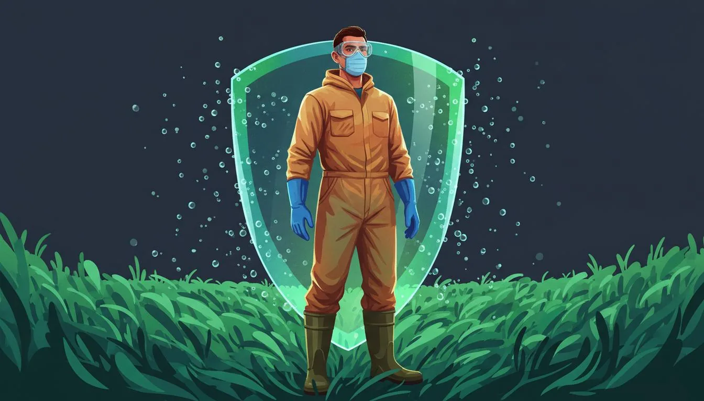

Unidad 2 de 7 · 30-40 min · Interactiva
Bioseguridad en el campo
Quimicos, cuerpo y agroecología.
Lo que la ciencia probo - sin alarmismo y sin disimulo.
Tu progreso anterior
Lo importante en 1 minuto
5 cosas que debe saber antes de seguir.
Parte 1 de 7 · Lo simple: para todos
Como entra el químico al cuerpo
Imagine que su piel es una esponja. Cuando usted toca un químico liquido sin guante, parte de ese liquido pasa por la esponja al adentro de su cuerpo.
Sin EPP las gotas de químico entran por piel, ojos y pulmones. Con EPP rebotan.
Cuando respira la nube de la fumigada sin tapabocas, los pulmones absorben las gotas que no se ven. Esas gotas viajan a la sangre. Por eso los químicos del campo enferman a la gente despacio. No es de un día. Es de muchos años acumulados.
Los más sensibles al peligro
- Ninos - su cuerpo absorbe más por kilo de peso
- Mujeres embarazadas - el feto recibe lo que recibe la madre
- Personas mayores - rinones e hígado más lentos para limpiar
- Quien trabaja sin protección por años - el dano se acumula
1. Como entra principalmente un químico liquido al cuerpo del aplicador?
2. Quien NO está en el grupo de más sensibles a químicos agricolas?
3. Por que los químicos del campo "enferman despacio"?
Parte 2 de 7 · Lo simple: para todos
Glifosato: lo que sabemos y lo que sigue en discusión
La evidencia sobre glifosato y linfoma es seria, pero sigue en disputa: expliquemos qué sabemos y qué no.
La IARC (agencia de la OMS) clasificó el glifosato en el Grupo 2A: probablemente cancerígeno para humanos. Es una evaluación de peligro —si puede causar daño—, no una estimación del riesgo a una dosis concreta.
«Evidencia limitada» en personas significa que se observó una asociación, pero no se pudieron descartar azar, sesgo o confusión. La IARC también encontró evidencia suficiente en animales y evidencia de daño genético en estudios experimentales.
Linea de tiempo del caso
Monsanto patenta el glifosato como herbicida. Se convierte en el químico agrícola más usado del mundo.
IARC/OMS clasifica glifosato como Grupo 2A "probable cancerígeno humano" - Lyon, Francia.
Los estudios sobre glifosato y linfoma continúan en discusión; una demanda individual no determina por sí sola la evidencia científica.
En 2018 Bayer adquiere Monsanto. No se incluyen cifras de compra no sustentadas por este expediente.
El acuerdo anunciado en 2020 fue de aproximadamente USD 10.000 millones (hasta USD 10.900 millones); cerca de 65.000 reclamaciones.
En febrero de 2026 se propuso un acuerdo colectivo de USD 7.250 millones. No se presentan como verificadas cifras mayores de pagos o demandas.
La evidencia admite incertidumbre
Las formulaciones comerciales pueden incluir coadyuvantes; la evaluación de una sustancia activa no describe por sí sola cada producto formulado.
Un metaanálisis de Zhang et al. (2019) estimó, entre quienes tuvieron la exposición acumulada más alta, un riesgo relativo de linfoma no Hodgkin de 1,41 (IC 95 %: 1,13–1,75). Otros metaanálisis no encontraron exceso para «alguna vez expuesto» y grandes cohortes tampoco hallaron aumento del linfoma total.
La OMS, a través de la IARC, dice que el glifosato probablemente causa cáncer. Los estudios en quienes más lo usan muestran alrededor de 40 % más riesgo de linfoma. Otras agencias no están de acuerdo, y la ciencia sigue discutiéndolo. Mientras se decide, protegerse y dejar de depender de él es la decisión prudente.
IARC evalúa peligro; los reguladores evalúan riesgo bajo exposiciones previstas. También difieren por formulaciones o ingrediente activo, exposición ocupacional o dietaria y estudios incluidos. La EFSA en 2023 no encontró «área crítica de preocupación», calificó de no concluyente la epidemiología y reconoció vacíos sobre coformulantes e impurezas.
En ensayos celulares, 8 de 9 formulaciones fueron hasta mil veces más tóxicas que sus principios activos; esto no mide directamente el riesgo en personas. Estudios en estanques experimentales reportaron 96–100 % de mortalidad de larvas; el contrapeso es que un metaanálisis de 36 estudios no halló cambio significativo en biomasa microbiana total del suelo a dosis de campo.
En Colombia, la Sentencia T-236 de 2017 condicionó la reanudación de la aspersión aérea. El INS registró 6.729 intoxicaciones por plaguicidas en 2024; paraquat representó 29,3 % de los suicidios consumados.
1. Que cáncer desarrollo Dewayne Johnson tras años aplicando Roundup?
2. Cuanto ha pagado Bayer en compensaciones por glifosato hasta 2024?
3. Que clasificación dio la IARC/OMS al glifosato en 2015?
4. Por que el glifosato sigue vendiendose en Colombia a pesar del caso Bayer?
Parte 3 de 7 · Lo simple: para todos
El kit mínimo de protección
Si va a aplicar cualquier químico (incluyendo biopreparados como bordelés, sulfocálcico o JWA), use esto.
Modelo EPA para mezcla, carga y aplicación. Ingrese el ingrediente activo aplicado por día.
Los guantes solos reducen cerca de 15 % la exposición total; la doble capa con guantes, casi la mitad. El jabón es una práctica de higiene, no un factor de protección del cálculo.
El modelo da casi siempre «bajo el AOEL» para glifosato: ese límite no se basa en cáncer y el resultado no demuestra que el glifosato cause daño. Los datos suponen camisa y pantalón; pueden subestimar la exposición sin camisa, con bomba que gotea o al mezclar a mano.
Fuente del modelo: EPA OPP, Occupational Pesticide Handler Unit Exposure Surrogate Reference Table (mayo de 2021); bomba de espalda, mezcla, carga y aplicación.
Prioridad de protección
El modelo EPA indica que cubrir piernas y espalda con doble capa y guantes reduce más la exposición que usar guantes solos. El jabón es higiene posterior, no un factor de protección durante la aplicación.
1. Si solo puede comprar TRES elementos de protección hoy, cuales son los más criticos?
2. ¿Qué reduce más la exposición dérmica según el modelo EPA?
3. Para que químicos se necesita EPP (incluso si son orgánicos)?
Parte 4 de 7 · Tecnico: para profesionales
Evidencia científica de danos a la salud
Meta-análisis y estudios cohorte revisados por pares (peer-review).
Prohibiciones mundiales vs Colombia
Glifosato (Roundup, Faena, Panzer, Glyfocom)
- Linfoma no Hodgkin: meta-análisis Zhang et al. 2019 Mutation Research 781:186-206 - incremento de riesgo 41% en exposición alta acumulada
- Disrupcion microbiota intestinal (Tang et al. 2020 Environ Pollut 261:114129)
- Mesnage et al. observaron alteraciones hepáticas en ratas expuestas crónicamente a una formulación de Roundup. Este resultado no establece por sí solo el efecto ni el riesgo en personas.
- IARC/OMS 2015 Monograph 112: Grupo 2A "probable cancerígeno humano"
Paraquat (Gramoxone, Praxone)
- Enfermedad de Parkinson: Tanner et al. 2011 Environ Health Perspect 119:866 - asociación probable: OR 2,5 (1,4–4,7); metaanálisis OR 1,64 (1,27–2,13)
- Brasil: prohibido mediante ANVISA RDC 177/2017. En Colombia está prohibida la aplicación aérea; el estado actual del registro no está verificado.
Clorpirifos (Lorsban, Pyrinex)
- Reduccion de coeficiente intelectual en hijos de madres expuestas durante embarazo: Engel et al. 2007 Environ Health Perspect 115:1271; Rauh et al. 2012 PNAS 109:7871
- Trastornos de conducta (TDAH, autismo): Shelton et al. 2014
- EE. UU.: la revocación de tolerancias de 2021 fue anulada en 2023 y las tolerancias se restablecieron en 2024. UE: no renovación. Colombia: cancelado por Res. ICA 00006365 de 2023.
Mancozeb (Dithane)
- Metabolito ETU: IARC Grupo 3 (no clasificable en cuanto a carcinogenicidad para los seres humanos).
- UE: no renovó la aprobación. El estado del registro colombiano no se infiere aquí.
1. Que enfermedad neurologica se asocia con exposición ocupacional crónica al paraquat?
2. Cual es el efecto documentado del clorpirifos en hijos de madres expuestas durante embarazo?
3. Cual es el estado regulatorio del paraquat en Colombia vs UE/EE.UU.?
4. Cual es el riesgo principal del mancozeb?
Parte 5 de 7 · Lo que pocos dicen
La agroecología también tiene químicos peligrosos
La transición a agroecología NO elimina todos los riesgos. Algunos biopreparados contienen sustancias que requieren EPP.
Esto es información critica y poco difundida
El hecho de que algo sea "orgánico" o "agroecológico" no significa que sea inofensivo. El hidroxido de potasio del JWA puede dejarlo ciego.
Hidroxido de potasio (KOH) - en JADAM Wetting Agent (JWA)
- Corrosivo grado industrial. pH del KOH solido en agua ~13-14
- Quemaduras químicas profundas de piel (3er grado en <30 segundos)
- Lesion ocular irreversible (ceguera)
- Dano respiratorio si se inhala el polvo
- EPP obligatorio: gafas químicas selladas + guantes nitrilo grueso + mascarilla N95 + manga larga. Producir en lugar ventilado, NO en cocina cerrada.
Cal viva (CaO) y cal hidratada (Ca(OH)₂)
- Alcalinas fuertes, reacciones exotermicas
- Quemaduras químicas alcalinas (peores que acidas por mayor penetracion tisular)
- Lesiones oculares severas, quemaduras respiratorias por inhalación
Chagra recomienda cal dolomitica en lugar de cal viva o hidratada - por seguridad.
Sulfato de cobre (CuSO₄) - caldo bordelés
- Hepatotoxicidad acumulativa por exposición crónica
- Cu acumulado en suelo >100 ppm tóxico para lombrices y micorrizas
- IFOAM limita a 4 kg Cu/ha/año
- EPP: mascarilla N95 para preparación + gafas + guantes
Compost en descomposicion - aspergilosis
- Compost activo contiene esporas de Aspergillus fumigatus
- Si se inhalan en grandes cantidades (volteo de pilas), pueden causar aspergilosis pulmonar o alveolitis alergica
- EPP: mascarilla N95 durante volteo
- Personas inmunocomprometidas (VIH, diabetes mal controlada, EPOC) deben evitar manipular compost activo
1. Que químico del JADAM Wetting Agent (JWA) requiere especial cuidado?
2. Por que Chagra recomienda cal dolomitica y NO cal viva ni hidratada?
3. Quienes NO deben manipular compost activo en descomposicion?
Parte 6 de 7 · Tecnico: mezclas peligrosas
Mezclas químicas prohibidas
Algunas mezclas producen gases toxicos. Otras anulan el efecto de los productos. Aquí está la matriz.
Matriz de compatibilidad
| Bordeles | Sulfocalcico | Purin ortiga | Trichoderma | Bacillus | Aceites | |
|---|---|---|---|---|---|---|
| Bordeles | - | PROHIBIDO | 48h | PROHIBIDO | PROHIBIDO | PROHIBIDO |
| Sulfocalcico | PROHIBIDO | - | SEGURO | PROHIBIDO | PROHIBIDO | 48h |
| Purin ortiga | 48h | SEGURO | - | SEGURO | SEGURO | SEGURO |
| Trichoderma | PROHIBIDO | PROHIBIDO | SEGURO | - | SEGURO | 48h |
| Bacillus | PROHIBIDO | PROHIBIDO | SEGURO | SEGURO | - | 48h |
| Aceites | PROHIBIDO | 48h | SEGURO | 48h | 48h | - |
Verde = pueden mezclarse · Amarillo = esperar 48h entre aplicaciones · Rojo = NUNCA mezclar
Gases toxicos de mezclas domesticas
- Cualquier acido + Cloro (hipoclorito) → Gas cloro (Cl₂) - quemadura pulmonar, muerte por edema pulmonar
- Cloro + Amoniaco → Cloramina (NH₂Cl) - tóxica respiratoria
Mezclas agroecológicas prohibidas
- Caldo bordelés (Cu) + Caldo sulfocálcico (S): precipita CuS inutilizable + libera gases sulfurados toxicos
- Bordeles + aceites foliares: fitotoxicidad
- Purin de ortiga (Fe) + cupricos: precipita Fe-Cu
- Cupricos/sulfuricos + inoculantes biológicos (Trichoderma, Bacillus): mata el inoculo
- Glifosato + surfactantes: aumenta toxicidad (sinergia Mesnage 2013)
1. Que gas tóxico se forma al mezclar acidos con cloro (hipoclorito)?
2. Por que NO se debe mezclar caldo bordelés con caldo sulfocálcico?
3. Por que los productos cupricos/sulfuricos NO deben mezclarse con inoculantes biológicos (Trichoderma, Bacillus)?
Parte 7 de 7 · Práctica: rutinas que salvan
Rutinas que salvan vidas
El kit en su finca y los pasos que debe seguir después de cada aplicación.
Pon los pasos en orden correcto
Haga clic en cada paso para colocarlo en la secuencia correcta (1, 2, 3...).
Menos exposición hoy y alternativas agroecológicas
Use la ropa que cubra piernas y espalda, guantes y respirador adecuado; evite mezclar a mano. El lavado y la ducha son prácticas posteriores, no protección durante la aplicación.
Para avanzar hacia alternativas, explore las unidades de biopreparados y transición agroecológica.
Menos exposición hoy y alternativas agroecológicas
Use ropa que cubra piernas y espalda, guantes y respirador adecuado; evite mezclar a mano. El lavado y la ducha son prácticas posteriores, no protección durante la aplicación.
Para avanzar hacia alternativas, consulte el módulo de biopreparados y la unidad de transición agroecológica.
Rutinas de protección para su finca
- 1 mascarilla N95 (o respirador media-cara con cartucho químico)
- 1 par gafas químicas selladas
- 1 caja guantes nitrilo grueso (100 pares)
- 1 overol manga larga
- 1 par botas caucho dedicadas a aplicación
- 1 jabon fuerte tipo industrial
- 1 cubeta solo para enjuagar EPP
- 1 estante separado para EPP (NO mezclar con ropa familiar)
Reglas para embarazadas y ninos
- Embarazadas: NO aplican químicos NI manipulan biopreparados con KOH/cal viva/cobre/azufre. Ningun trimestre.
- Ninos menores de 12: NO aplicar, NO acercarse a la nube de aspersion por 4h, NO comer fruta no lavada del lote tratado.
- Ninos 12-17: solo con EPP completo bajo supervisión adulta y aplicaciones de bajo riesgo.
- Lactantes: madre lactando NO entra al lote tratado por 24h mínimo.
Almacenamiento seguro
- Cuarto cerrado con llave (lejos de cocina, dormitorios, alimentos)
- Estante alto fuera del alcance de ninos y mascotas
- Productos químicos y biopreparados SEPARADOS
- Recipientes con tapa hermetica (NO botellas de gaseosa - confunden)
- Plan de emergencia visible con la línea toxicológica CISPROQUIM: 01 8000 916 012 (gratuita, 24 horas)
En caso de envenenamiento agudo
- Llamar a CISPROQUIM: 01 8000 916 012 (gratuita, 24 horas)
- Llevar al hospital con el envase del producto
- No inducir vomito sin instruccion del Centro Toxicologia
- No dar leche, aceite ni "remedios caseros"
Línea toxicológica CISPROQUIM · Gratuita · 24 horas
1. Cual es el ORDEN correcto para quitarse el EPP después de aplicar?
2. Pueden los ninos menores de 12 años aplicar químicos en finca?
3. ¿Cuál es la línea toxicológica de CISPROQUIM (gratuita, 24 horas)?
4. Que NO se debe hacer en caso de envenenamiento agudo?
Resumen de la unidad
Bioseguridad en el campo: lo que aprendiste.
5 puntos clave
Resultados por quiz
Referencias científicas
- Engel SM et al. 2007. American Journal of Epidemiology 165:1397. DOI: 10.1093/aje/kwm029.
- Eriksson M et al. 2008. Int J Cancer 123:1657-1663.
- Hayes TB et al. 2010. PNAS 107:4612-4617.
- IARC 2015. Monograph 112: glyphosate. Lyon, IARC/WHO.
- McDuffie HH et al. 2001. Cancer Epidemiol Biomarkers Prev 10:1155-1163.
- Mesnage R et al. 2014. BioMed Res Int 2014:179691.
- Mesnage R et al. 2017. Sci Rep 7:39328.
- Rauh VA et al. 2012. PNAS 109:7871-7876.
- Shelton JF et al. 2014. Environ Health Perspect 122:1103-1109.
- Tang Q et al. 2020. Estudio en ratas. Environ Pollut 261:114129.
- Tanner CM et al. 2011. Environ Health Perspect 119:866-872.
- Wéry N et al. 2014. Front Cell Infect Microbiol. DOI: 10.3389/fcimb.2014.00042.
- Zhang L, Rana I et al. 2019. Exposure to glyphosate-based herbicides and risk for non-Hodgkin lymphoma: a meta-analysis. Mutation Research 781:186-206.
Línea Toxicológica CISPROQUIM Colombia
01 8000 916 012 · 24 horas · Gratuita
Hecho desde Guatoc · Choachi · Cundinamarca · Colombia
Una iniciativa de Guatoc-EcoHub · AGPL-3.0 · 2026